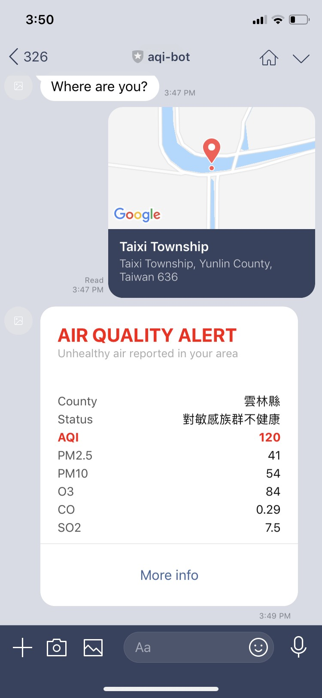

Cutting through the smog: making an air quality bot with Haskell
In this tutorial, I want to show you how a chatbot can help you reduce your pollution intake, and how to build one in Haskell using the line-bot-sdk. This tutorial assumes some familiarity with Haskell.
Short and long-term exposure to air pollution can result in significant health problems. When air quality is considered unhealthy we should avoid certain activities, which bears asking: how to get notified when air quality is poor? this post is an attempt at solving this.
The idea behind this chatbot is simple: users share their location, and the bot reads publicly available pollution data from local monitoring stations and if the air is unhealthy we push a message to the users to let them know.
Why using a chatbot?
Chatbots allow users to have a smooth interaction with your service, and it’s relatively easy to intergrate a chatbot with messaging apps.
Using a chatbot also has the additional benefit that not only users but also groups can interact with your chatbot. For example, in this tutorial, you will learn how to simply drop a bot into your family chatroom and after you and your relatives will get promptly notified when air quality is poor; additionally, you can simply by sharing different locations with the bot keep track of sites where you and others spent time.
We are going to be using the line-bot-sdk, a Haskell SDK for the LINE messaging platform. You can read an overview of the LINE Messaging API here.
This blog post was generated from literate Haskell sources. For those who prefer to read the code, an extraction version can be found here.
The line-bot-sdk uses the servant framework, a set of packages for declaring web APIs at the type-level. Here are the GHC language extensions we need for this example to work:
{-# LANGUAGE ApplicativeDo #-}
{-# LANGUAGE DataKinds #-}
{-# LANGUAGE DeriveGeneric #-}
{-# LANGUAGE FlexibleContexts #-}
{-# LANGUAGE LambdaCase #-}
{-# LANGUAGE NamedFieldPuns #-}
{-# LANGUAGE OverloadedStrings #-}
{-# LANGUAGE QuasiQuotes #-}
{-# LANGUAGE RecordWildCards #-}
{-# LANGUAGE TypeOperators #-}Imports
import Control.Concurrent.Lifted (fork, threadDelay)
import Control.Concurrent.STM.TVar (TVar, modifyTVar, newTVar,
readTVar)
import Control.Exception (try)
import Control.Monad (forM, forM_, forever)
import Control.Monad.IO.Class (MonadIO, liftIO)
import Control.Monad.Reader
import Control.Monad.STM (atomically, retry)
import Control.Monad.Trans.Class (lift)
import Control.Monad.Trans.Control (MonadBaseControl)
import Control.Monad.Trans.Maybe (runMaybeT, MaybeT(..))
import Data.Aeson
import Data.Aeson.QQ (aesonQQ)
import Data.Aeson.Types
import Data.Bifunctor
import Data.List.Extra (minimumOn)
import Data.Maybe (catMaybes)
import Data.String (fromString)
import Data.Text (Text)
import qualified Data.Text as T
import qualified Data.Vector as V
import GHC.Generics
import Line.Bot.Client
import Line.Bot.Types as B
import Line.Bot.Webhook as W
import Network.HTTP.Simple hiding (Proxy)
import Network.Wai.Handler.Warp (runEnv)
import Servant
import Servant.Server (Context ((:.), EmptyContext))
import System.Environment (getEnv)
import Text.Read (readMaybe)Parsing measurement data
The Taiwan’s Environmental Protection Administration monitors air pollution in major cities and counties across Taiwan. They have a public API with the latest registered air pollution:
[
{
"SiteName": "基隆",
"County": "基隆市",
"AQI": "40",
"Pollutant": "",
"Status": "良好",
"SO2": "3.7",
"CO": "0.24",
"CO_8hr": "0.2",
"O3": "44",
"O3_8hr": "43",
"PM10": "25",
"PM2.5": "10",
"NO2": "",
"NOx": "",
"NO": "",
"WindSpeed": "1.1",
"WindDirec": "90",
"PublishTime": "2019-04-29 16:00",
"PM2.5_AVG": "12",
"PM10_AVG": "27",
"SO2_AVG": "2",
"Longitude": "121.760056",
"Latitude": "25.129167"
}
]This API returns a JSON array with measured data from all the monitoring stations in Taiwan, typically updated every hour.
An AQI number under 100 signifies good or acceptable air quality, while a number over 100 is cause for concern. Among the reported pollutants there are particulate matter, ground level ozone, carbon monoxide and sulfur dioxide.
We will additionally need the location of the measurement, which we will use to find the closest available data to our users:
data AQData = AQData
{ aqi :: Int
, county :: Text
, lat :: Double
, lng :: Double
, status :: Text
, pm25 :: Int
, pm10 :: Int
, o3 :: Int
, co :: Double
, so2 :: Double
}
deriving (Eq, Show, Generic)However, first we need to do some data preprocessing:
- note that all the JSON fields are strings, but our
AQDatatype requires numeric values - there are some data points missing relevant details, such as the AQI or the location:
So we need to remove such data points, since they amount to noise. One possible way to do this, is by wrapping [AQData] in a newtype:
And then provide an instance of the FromJSON class to decode and filter bad values:
However, there is another possibility. FromJSON has another method we can implement:
instance FromJSON AQData where
parseJSONList = withArray "[AQData]" $ \arr ->
catMaybes <$> forM (V.toList arr) parseAQDataArray items go through parseAQData. Here the MaybeT monad transformer produces a value only if all items are present:
parseAQData :: Value -> Parser (Maybe AQData)
parseAQData = withObject "AQData" $ \o -> runMaybeT $ do
aqi <- MaybeT $ readMaybe <$> o .: "AQI"
county <- lift $ o .: "County"
lat <- MaybeT $ readMaybe <$> o .: "Latitude"
lng <- MaybeT $ readMaybe <$> o .: "Longitude"
status <- lift $ o .: "Status"
pm25 <- MaybeT $ readMaybe <$> o .: "PM2.5"
pm10 <- MaybeT $ readMaybe <$> o .: "PM10"
o3 <- MaybeT $ readMaybe <$> o .: "O3"
co <- MaybeT $ readMaybe <$> o .: "CO"
so2 <- MaybeT $ readMaybe <$> o .: "SO2"
return AQData {..}We then use catMaybes :: [Maybe a] -> [a] function to weed out the Nothings and return a list of AQData. Now that we have a FromJSON instance, we can write a client function to call this API:
getAQData :: IO [AQData]
getAQData = do
eresponse <- try $ httpJSON opendata
case eresponse of
Left e -> do
print (e :: HttpException)
getAQData -- retry
Right response -> return $ getResponseBody response
where
opendata = "https://opendata.epa.gov.tw/ws/Data/AQI?$format=json"Here we only intercept exceptions of type HTTPException. For simplicity we just retry if the request fails, in practice you should inspect the error and implement retries with exponential backoff.
Distance between two geo points
We want our bot to notify users of unhealthy air in the regions where they live and work, so first we need to know which monitor is the closest to the users. For that, we will use the harvesine formula, which determines the great-circle distance between two points on a sphere given their longitudes and latitudes.
First let’s define a type alias for latitude/longitude pairs (in degrees):
distRad :: Double -> Coord -> Coord -> Double
distRad radius (lat1, lng1) (lat2, lng2) = 2 * radius * asin (min 1.0 root)
where
hlat = hsin (lat2 - lat1)
hlng = hsin (lng2 - lng1)
root = sqrt (hlat + cos lat1 * cos lat2 * hlng)
hsin = (^ 2) . sin . (/ 2) -- harvesine of an angledistDeg :: Double -> Coord -> Coord -> Double
distDeg radius p1 p2 = distRad radius (deg2rad p1) (deg2rad p2)
where
d2r = (/ 180) . (* pi)
deg2rad = bimap d2r d2rWith distance we can calculate the distance in kilometers between any two given geo points. Now only reminds extract the air quality data point that is closest to a given location:
getCoord :: AQData -> Coord
getCoord AQData{..} = (lat, lng)
closestTo :: [AQData] -> Coord -> AQData
closestTo xs coord = (distance coord . getCoord) `minimumOn` xsminimumOn :: Ord b => (a -> b) -> [a] -> a is defined in the package extra.
App environment
Most of the computations we are going to define require reading values from a shared environment:
data Env = Env
{ token :: ChannelToken
, secret :: ChannelSecret
, users :: TVar [(Source, Coord)]
}This way we can pass around the channel token and secret, and the list of users, which are represented as (Source, Coord). Source is defined in Line.Bot.Webhook.Events and it contains the Id of the user, group or room where push messages will be sent.
The user list will be concurrently read and updated from different threads, so we store it here in a mutable variable, using Control.Concurrent.STM.TVar from the stm package1.
We are going to use mtl type classes instead of a concrete monad transformer stack for this tutorial2, with functions being polymorphic in their effect type. One benefit of this approach is that type constraints cleary express (and enforce) which effects can take place, and as a bonus will give us more options for composition.
Handling webhook events
When an event, such as when our bot joins a chatroom, an HTTP POST request is sent to our registered webhook URL with the channel. Here we are interested in three types of events (other events are just ignored):
- when our bot is added as a friend (or unblocked)
- joins a group or room
- receives a location message from a user
webhook :: (MonadReader Env m, MonadIO m) => [Event] -> m NoContent
webhook events = do
forM_ events $ \case
EventFollow {..} -> askLoc replyToken
EventJoin {..} -> askLoc replyToken
EventMessage { message = W.MessageLocation {..}
, source
} -> addUser source (latitude, longitude)
_ -> return ()
return NoContentFor the first two, we reply with a text message that contains a quick reply button, with a location action: this allows the users to easily share their location for air monitoring.
We are using Line.Bot.Types.ReplyToken, which is included in events that can be replied:
askLoc :: (MonadReader Env m, MonadIO m) => ReplyToken -> m ()
askLoc rt = do
Env {token} <- ask
_ <- liftIO $ runLine comp token
return ()
where
welcome = "Where are you?"
qr = QuickReply [QuickReplyButton Nothing (ActionLocation "location")]
comp = replyMessage rt [B.MessageText welcome (Just qr)]MessageText is a data constructor from Line.Bot.Types.Message. All messages can be sent with an optional QuickReply; Quick replies allow users to select from a predefined set of possible replies, see here for more details on using quick replies.
Once we receive a location message event, we add the user and her location to the shared list of users:
addUser :: (MonadReader Env m, MonadIO m) => Source -> Coord -> m ()
addUser source coord = do
Env {users} <- ask
liftIO $ atomically $ modifyTVar users ((source, coord) :)
return ()We add the source of the event, so if the message was sent from a group, we will notify the group, not the user who shared the location.
Note that for a real-world chatbot you should handle dual events like unfollow or leave.
Serving the webhook: WAI application
To serve our webhook API we need to produce a WAI app.
The line-bot-sdk exports a type synonym defined in Line.Bot.Webhook that encodes the LINE webhook API:
newtype Events :: Events { events :: [Event] }
type Webhook = LineReqBody '[JSON] Events :> Post '[JSON] NoContentThe LineReqBody combinator will validate that incoming requests originate from the LINE platform.
Servant handlers run by default in the Handler monad. In order to let our webhook handler to read the environment Env (which is enforced by the type constraint in webhook) we are going to stack the Reader monad.
It is beyond the scope of this tutorial to cover the nuts and bolts of the Servant web framework, which are well-covered in e.g. the servant tutorials.
api = Proxy :: Proxy Webhook
ctx = Proxy :: Proxy '[ChannelSecret]
app :: MonadReader Env m => m Application
app = ask >>= \env ->
let server = hoistServerWithContext api ctx (`runReaderT` env) aqServer
in return $ serveWithContext api (secret env :. EmptyContext) serverThe final step is to turn our aqServer into a WAI Application.
Servant allows to pass values to combinators by using a Context. The LineReqBody combinator requires a Context with the channel secret. This is enforced by the type-level list '[ChannelSecret].
Periodic updates
We previously defined getAQData, which is an IO action that returns the list of (valid) data points. Our goal now is to call this API every hour to get the latest measured data and map it to our users, based on the location:
processAQData :: (MonadReader Env m, MonadIO m) => m ()
processAQData = do
Env {users, token} <- ask
users' <- liftIO $ atomically $ do
xs <- readTVar users
case xs of
[] -> retry
_ -> return xs
liftIO $ getAQData >>= \aqData ->
let users'' = [(user, aqData `closestTo` coord) | (user, coord) <- users']
in forM_ users'' $ flip runLine token . notifyChat
return ()processAQData does serveral things:
- read the list stored in the transactional variable
usersin the environment: if the list is empty,retry, blocking the thread until users are added. - call
getAQData* we then run a list comprehension where we map each user, of type(Source, Coord)to(Source, AQData) - for each user, call
notifyChat
notifyChat :: (Source, AQData) -> Line NoContent
notifyChat (Source a, x)
| unhealthy x = pushMessage a [mkMessage x]
| otherwise = return NoContentTo alert users, we will push messages to those users whose closest monitoring station reports an AQI over 100:
processAQData needs to be called periodically, at least once every hour. We will run it in a separate thread, so that it runs concurrently with our webhook server:
loop :: (MonadReader Env m, MonadIO m, MonadBaseControl IO m) => m ()
loop = do
fork $ forever $ do
processAQData
threadDelay (3600 * 10^6)
return ()Air quality alerts
To inform users of pollution levels, we will use a Flex Message, which are messages with customizable layouts written in JSON format.

mkMessage :: AQData -> B.Message
mkMessage x = B.MessageFlex "air quality alert!" (flexContent x) NothingA Flex message is constructed from an alternative text (for clients not supporting the feature), a Data.Aeson.Value which contains the message layout and content, and an optional quick reply:
To design the layout of the alert message we used the Flex Message Simulator. We will use the JSON quasiquoter aesonQQ, which converts (at compile time) a string representation of a JSON value into a Value:
flexContent :: AQData -> Value
flexContent AQData{..} = [aesonQQ|
{
"type": "bubble",
"styles": {
"footer": {
"separator": true
}
},
"header": {
"type": "box",
"layout": "vertical",
"contents": [
{
"type": "text",
"text": "AIR QUALITY ALERT",
"weight": "bold",
"size": "xl",
"color": "#ff0000",
"margin": "md"
},
{
"type": "text",
"text": "Unhealthy air reported in your area",
"size": "xs",
"color": "#aaaaaa",
"wrap": true
}
]
},
"body": {
"type": "box",
"layout": "vertical",
"contents": [
{
"type": "box",
"layout": "vertical",
"margin": "xxl",
"spacing": "sm",
"contents": [
{
"type": "box",
"layout": "horizontal",
"contents": [
{
"type": "text",
"text": "County",
"size": "sm",
"color": "#555555",
"flex": 0
},
{
"type": "text",
"text": #{county},
"size": "sm",
"color": "#111111",
"align": "end"
}
]
},
{
"type": "box",
"layout": "horizontal",
"contents": [
{
"type": "text",
"text": "Status",
"size": "sm",
"color": "#555555",
"flex": 0
},
{
"type": "text",
"text": #{status},
"size": "sm",
"color": "#111111",
"align": "end"
}
]
},
{
"type": "box",
"layout": "horizontal",
"contents": [
{
"type": "text",
"text": "AQI",
"weight": "bold",
"size": "sm",
"color": "#ff0000",
"flex": 0
},
{
"type": "text",
"text": #{show aqi},
"weight": "bold",
"size": "sm",
"color": "#ff0000",
"align": "end"
}
]
},
{
"type": "box",
"layout": "horizontal",
"contents": [
{
"type": "text",
"text": "PM2.5",
"size": "sm",
"color": "#555555",
"flex": 0
},
{
"type": "text",
"text": #{show pm25},
"size": "sm",
"color": "#111111",
"align": "end"
}
]
},
{
"type": "box",
"layout": "horizontal",
"contents": [
{
"type": "text",
"text": "PM10",
"size": "sm",
"color": "#555555",
"flex": 0
},
{
"type": "text",
"text": #{show pm10},
"size": "sm",
"color": "#111111",
"align": "end"
}
]
},
{
"type": "box",
"layout": "horizontal",
"contents": [
{
"type": "text",
"text": "O3",
"size": "sm",
"color": "#555555",
"flex": 0
},
{
"type": "text",
"text": #{show o3},
"size": "sm",
"color": "#111111",
"align": "end"
}
]
},
{
"type": "box",
"layout": "horizontal",
"contents": [
{
"type": "text",
"text": "CO",
"size": "sm",
"color": "#555555",
"flex": 0
},
{
"type": "text",
"text": #{show co},
"size": "sm",
"color": "#111111",
"align": "end"
}
]
},
{
"type": "box",
"layout": "horizontal",
"contents": [
{
"type": "text",
"text": "SO2",
"size": "sm",
"color": "#555555",
"flex": 0
},
{
"type": "text",
"text": #{show so2},
"size": "sm",
"color": "#111111",
"align": "end"
}
]
}
]
}
]
},
"footer": {
"type": "box",
"layout": "horizontal",
"contents": [
{
"type": "button",
"action": {
"type": "uri",
"label": "More info",
"uri": "https://www.epa.gov.tw/"
}
}
]
}
}
|]Putting it all together
We are almost done! The only remaining part is to run our server and main loop:
- We read from the environment the channel token and secret
- create an initial
Env. - thread the inital environment to our
appandloop. - call
Network.Wai.Handler.Warp.runto run the webhook in port3000
main :: IO ()
main = do
token <- fromString <$> getEnv "CHANNEL_TOKEN"
secret <- fromString <$> getEnv "CHANNEL_SECRET"
env <- atomically $ Env token secret <$> newTVar []
runReaderT loop env
run 3000 $ runReader app envHere you can see we are actually instantiating loop and app to concrete monads.